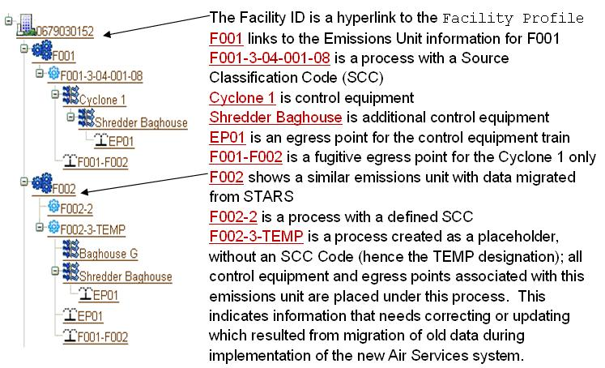
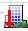
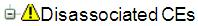
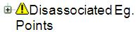
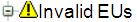
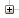
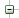
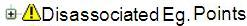

Previous Topic
Next Topic
|
Previous Topic |
Next Topic |
The “Facility Tree” concept is graphical, interactive, and available on almost all screens within the system. The tree enables you to navigate within the virtual/online facility by simply clicking on the tree icons which are labeled and graphically represent individual or collective emissions units, processes, control equipment, and release points.
The Facility Tree contains and displays the relationship between emissions units, process, control equipment and release point information; e.g., whether control equipment is in series or parallel and whether release points are venting controlled or uncontrolled emissions.
The icons appearance also gives a clear indication of the emissions unit operational status as well as being hyperlinked to all information known about that particular item.
Below is an example of a Facility Tree. While in the system, clicking on any item that appears brown and is underlined will display the specific information available at that level.

Note that release point EP01 is associated with the Shredder Baghouse in both emissions units F001 and F002. This scenario is common for control equipment. The graphical nature of the tree allows you to easily see which controls have been associated with each emissions unit within the facility.
As shown “graphically” and as mentioned earlier in the example, an emissions unit (F002) can have one or more “process” associated. Each process is characterized by one SCC number as supplied by the facility. The SCC number is entered or selected via a built-in search tool within the system and can be searched by either a cascading level menu or a keyword. All types of facilities (e.g., Title V, non-Title V, Synthetic Minor) will need to identify SCC codes in the new system, regardless of whether it was necessary in the past.
In summary, an emissions unit will have one or more processes associated with it. A process may have one or more control equipment, release points or both associated with it. Egress points may be associated to a process (e.g. fugitive) or a control equipment (e.g. stack). A control equipment may have one or more release points, subsequent control equipment, or both associated with it. The Facility Tree is designed to capture any real world scenario.
The following topics are included in this help page:
The following is a general discussion and graphical representation of the Facility Tree Icons. The data grid will show you the icon and then describe what it means when it shows up in the various trees throughout the system.
| Icon/Graphic | Usage | Discussion |
| Represents the facility. | The Icon is followed by the facility ID and is hyperlinked to the Facility Profile. | |
 |
Represents a facility that has been permanently shutdown. | Once the facility is permanently shutdown, it can only be resurrected by the system administrator. |
| Indicates an entity that has passed validation. | When you see the green checkmark next to the icon at the top of the Facility Tree, you know the action you were validating has been accepted. | |
| Indicates an emissions unit. | The Icon represents an emissions unit within the facility that is active. | |
| Represents an emissions unit that has not been validated or has been changed. | Once the emissions unit is associated, validated and submitted in IMPACT as an action, the icon will change from this form to the icon above. | |
| Represents an emissions unit that is not associated with the application or permit. | Indicates the emissions unit is not associated with the permit application and will not be associated with any subsequent issued permits. | |
| Represents emissions units that have been permanently shutdown. | Once the emissions unit is permanently shutdown, it can only be resurrected by the system administrator. | |
| Indicates an emissions unit that is not eligible or available to be included in the subject artifact. | The subject artifact may be an application or a permit action or other action that will not accept the emissions unit. | |
| In Title V Applications and Permits, represents an insignificant emissions unit. | The size of this triple gear indicates that the emissions unit is an insignificant emissions unit. | |
| In Title V Applications and Permits, represents an insignificant emissions that has not been validated or has been changed. | Once the emissions unit is associated, validated and submitted in IMPACT as an action, the icon will change from this form to the icon above. | |
| Represents an emissions process. | The process must have an SCC and will always be associated with an emissions unit. There may be more than one process for a single emissions unit. | |
| Represents control equipment. | The Icon is hyperlinked to all known information about the equipment. | |
| Represents an release point. | The release point can be a fugitive or stack emissions point from the facility. Fugitive is directly associated with the process while stack is directly associated with control equipment. | |
| Indicates an entity that has been changed in the system but not validated. | When you see this icon there is more work to be done or the action must be validated and submitted. | |
| For Emissions Inventories, indicates that an SCC has been entered for the process and has been validated. | Indicates that information is available for the emissions process in the form of an SCC. This icon must be present for Emissions Reporting. | |
| For Emissions Inventories, a process for which data has not been validated. | Validation of the Emissions Inventory will change the icon to the above icon. | |
| More than one emissions units grouped. | For
Emissions
Reports, groups of emissions units with the same process
are grouped together for calculation purposes. For Title V Applications, for the purpose of a combined emissions requirement. For PTI/PTIO Permits, for emissions units with identical requirements, all emissions units covered by a specific set of terms are listed above the Applicable Requirements table. |
|
| Emissions units grouped for which the data has not been validated. | The group must be validated and submitted to change to the above icon. | |
| Represents collapsed section of any lengthy tree representation. | To “un-collapse” the tree, click on the three dots and all emissions units in the tree will appear. | |
| Represents either a permit has been issued or an emissions inventory. | This icon is followed by the permit number or the emissions inventory number. Both are hyperlinked to the opening detail page for each tab. | |
 |
Represents control equipment that is not associated with a process. | If this appears, the equipment is at the facility but is not associated with any process. Once associated, the icon will not appear. |
 |
Represents an release point that is not associated with a process. | If this appears, the release point is at the facility but is not associated with the process. Once associated, the icon will not appear. |
 |
Represents emissions units with invalid status or have been given invalid status. | Invalid is used when migrated emissions units have invalid alphanumeric schemes and are subsequently renamed. |
 |
Represents the collapsed/compressed version of the object. | This button is useful to compress the length of a tree. |
 |
Represents the uncollapsed/uncompressed version of the object. | This button is useful to expand the tree to see all information. |
The system’s Facility Profile page allows you to create an emissions unit from the Create Emissions Unit button located at the bottom of the page. This is where you add an emission unit that is not listed in the Facility Tree.
Asterisks(*) denote what the system requires for creating an emission unit. However, information in some other data fields may be needed for the system to perform other functions. Therefore, completing as many fields as possible with correct information benefits the system and all its users.
To begin the process, click on the Create Emissions Unit button and complete the fields discussed below.
EIS Information is not required, but may be entered so that new EIS reports are pre-populated with the information when created. The information may be entered by clicking the expand information arrow . The ORIS Boiler ID which is designated by USEPA for electrical generation stations, if applicable, may be entered into the input field but is not required.
Allowable Emissions can be added to the newly created emissions unit whereas existing emissions unit(s) should already have a permit with allowables.
Note: Only complete the table for qualifying emission units as requested by the Ohio EPA’s SIP or Modeling section. Please refer to document “Allowable Emissions Instructions and Understandings” in the External Reference section of the system for further insight.
To add the emissions unit’s permitted allowables, you click on the Add Emissions button at the bottom of the list. Select the pollutant from the pick list and add the allowable, if applicable, in Pounds/hour and/or Tons/Year. Comments may be added to each pollutant if necessary. For example, if a unit has been issued more than one PTI, you can add the PTI number in which the allowable emissions originate from. To enter more than one allowable, click the Add Emissions button again and repeat the previous steps. To delete pollutants from the list, click the toggle button under the Select column and click the Delete Selected Pollutants button.
You can print the allowable emissions list by clicking the Printable view button and then clicking print in the pop-up. You can also export the data by clicking the Export to Excel button.
Note: Facility total allowable emissions can be viewed by clicking the Allowable Emissions in the third-level menu on the Facility Profile page. The total will only be a total of emissions that have been individually input into each individual emission unit page. In other words, it is not required to fill out allowable emissions for each emission unit. (see note above) For example, if there are allowables entered for just two emission units out of 12, then the total for the facility will only be for those two units.
Once
you have finished entering the all the information click the Save
button. The newly created emission unit ID will now be listed in the
Facility Tree with a set of blue gears  .
.
The system also has the
ability to create a clone of an emissions unit, useful for creating
additional emissions units with similar features, rather than entering
duplicate information repeatedly. Refer to the “Create a Cloned Emissions
Unit” heading for more information on this feature.
To continue creating the emission unit, additional information may need to be entered. Refer to the following headings below: “Create EmissionsProcess”, “Create Control Equipment”, and “Create Release Point”.
Another system feature is the ability to create an exact copy of an emission unit. This is useful for creating additional emissions units with similar features, rather than entering duplicate information repeatedly. This function is found under the Facility Tree by clicking on the emissions unit that you wish to copy. At the bottom of the Emission Unit Information page, click on the Create Cloned Emission Unit button. A screen will populate with the information from the emission unit being copied. You enter a new AQD Emissions Unit ID as described in the help above, as well as, any other information that you deem necessary to differentiate this unit from the unit copied. Once all information has been entered click the Save button and the emissions unit will appear in the Facility Tree as previously explained.
In order to permanently shutdown a facility or an emissions unit(s), Ohio EPA must receive a request and signed certification from the authorized official, as defined in OAC rule 3745-31-04(B) for non-Title V facilities, or the responsible official, as defined in OAC rule 3745-77-01 for Title V facilities, that identifies the facility ID or emission unit ID(s) and the date on which the facility or emissions unit(s) was permanently shutdown. If you select Permanently Shutdown from the Operating Status picklist, you will be required to enter a Shutdown Date. The Shutdown Date should be entered according to the actual shutdown date identified in the letter from the authorized official/responsible official, which may not necessarily correspond to the date of the letter itself.
The steps for permanently shutting down a facility are discussed in the Help page for Facility Detail.
The system allows you to create an
emissions process for a specific emissions unit where you can identify
the emissions unit process description, name, and Source Classification
Code (SCC). An emissions process with a valid SCC associated to its
corresponding emissions unit is required by the system in order for
applications to be effectively submitted and subsequently be issued a
permit. This feature is accessed either by clicking on the specific
emissions unit icon,  ,
in the Facility Tree or by selecting the AQD
Emissions Unit ID from the datagrid through the
second-level menu,
Emission Units,
of the Facility
Profile page. Either path will send you
to the specific Emissions
Unit Information page of the Facility
Profile. At the bottom of the page click the Create Emissions
Process
button and enter information according to the descriptions below.
,
in the Facility Tree or by selecting the AQD
Emissions Unit ID from the datagrid through the
second-level menu,
Emission Units,
of the Facility
Profile page. Either path will send you
to the specific Emissions
Unit Information page of the Facility
Profile. At the bottom of the page click the Create Emissions
Process
button and enter information according to the descriptions below.
Once you have chosen the SCC and filled in all process information, click the Save button. The page will refresh to the Emissions Unit Information page and the emissions process will appear, as a single light blue gear in the Facility Tree under the related emissions unit.
Note: If you click the Cancel button, you will be taken back to the Emissions Unit Information page where you must use the button at the bottom to get back to the Create Emissions Process page.
IMPORTANT: When emissions reporting is
performed in IMPACT, the SCC identified for each process may be used to
populate important information and perform calculations in this system. It is very
important you determine and use accurate SCC information.
Once an emissions process has been saved, you can associate control equipment and associate release points by clicking on the emissions process ID in the Facility Tree denoted by . The page will refresh to the specific Process Information page. In order for you to associate control equipment and release points, you must have already entered the control equipment information and the release point information by using the buttons at the bottom of the Facility Detail page. This is discussed in the next two sections of this Help page below.
The system’s Facility Profile page allows you to create control equipment for the facility. By clicking the Create Control Equipment button, the Control Equipment Information page allows you enter control equipment type, specific information, and pollutants controlled by the equipment. Once equipment is entered and saved, you may associate/disassociate and view/update the equipment information.
IMPORTANT: When emissions reporting is
performed in IMPACT, the control equipment efficiency(s) identified for
each control may be used to populate important information and perform
calculations in this system. It is very important you accurately enter this
information.
Once you have clicked Save, the control equipment will appear at the very bottom of the Facility Tree under denoted by . All control equipment that has been created will populate in the Facility Tree as disassociated until it is associated with a specific process or other control equipment. This designation does not change the control equipment information that has been entered into the control equipment file; it simply indicates that it is not associated.
You can associate a control equipment with an emissions process and you may also associate a “subsequent” control equipment with a specific control equipment. There may be more than one piece of control equipment associated with an emissions process, and there may be more than one emissions process in the facility that uses any particular piece of control equipment. However, any subsequent control equipment associated with a specific control equipment cannot be associated to another emissions process without the initial control equipment be associated first. Subsequent control equipment will always follow the initial control equipment, during association and disassociation. If a single piece of control equipment is used more than once in the Facility Tree, which is often the case, it will appear in the tree as many times as it is used. Also, the specific control equipment icon will be highlighted if selected throughout the Facility Tree.
Step1: Emissions Process.
Step 2: Designate the Control Equipment.
Step 3: Verify.
Step1: Control Equipment.
Step 2: Designate the Control Equipment.
Step 3: Verify.
Once the control equipment has been associated and saved, you have the option to disassociate the control equipment, whether it is a subsequent control equipment associated with another control equipment, or a control equipment associated with an emissions process. If a single piece of control equipment is associated with more than one process, it will only be disassociated from the specific process in which you have it disassociated and will remain on the other processes it is associated with. If applicable, you have to go to each specific process equipment to disassociate the control equipment from all processes. If you disassociate a subsequent control equipment it will disassociate from all the emissions processes for which the initial control equipment was associated.
Step1: Emissions Process/Control Equipment.
Step 2: Designate the Control Equipment.
Step 3: Verify.
Additional information on this feature can be found on the Help page for the third-level menu, Control Equipment .
The system’s Facility Profile page allows you to create release points for the facility. By clicking the Create Egress Point button, the Create Release Point page allows you enter release point information, as well as, continuous emissions monitor information. Once release points are entered and saved, you may associate/disassociate and view/update the information.
Once you have clicked Save, the release point will appear at the very bottom of the Facility Tree under  denoted by . All release points that have been created will populate in the Facility Tree as disassociated until it is associated with a specific process or control equipment.
An release point can be either associated with an emissions process, control equipment, or be completely disassociated from anything else in the facility. Because an release point may be associated with either a process or a piece of control equipment or both, it is very important to determine how you should associate the release point. There may be more than one release point associated with an emissions process or control equipment, and there may be more than one emissions process or control equipment in the facility that uses any particular release point. If a single release point is used more than once in the Facility Tree, which is often the case, it will appear in the tree as many times as it is used. Also, the specific release point icon will be highlighted if selected throughout the Facility Tree.
If the release point is completely disassociated from anything else in the facility, but it still exists in some capacity it will show up in the Facility Tree as Disassociated release Point. This designation does not change the release point information that has been entered into the release point file.
Step1: Emissions Process or Control Equipment.
Step 2: Designate the Release Point.
Step 3: Verify.
Once the release point has been associated and saved, you have the option to disassociate the release point.
Step1: Emissions Process/Control Equipment.
Step 2: Designate the Egress Point.
Step 3: Verify.
IMPORTANT: When emissions reporting is
performed in IMPACT, the control equipment efficiency(s) identified for
each control may be used to populate important information and perform
calculations in this system. It is very important you accurately enter this
information.
Additional information on this feature can be found on the Help page for the third-level menu, Release Points.
Copyright © 1996, 2004, Oracle. All rights reserved.